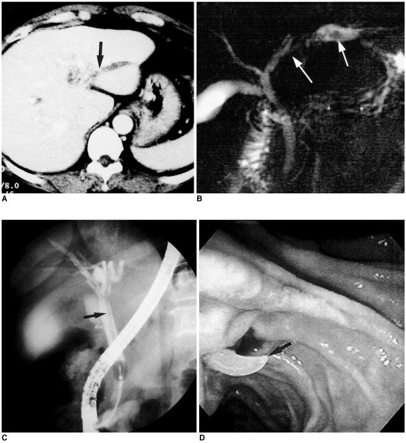
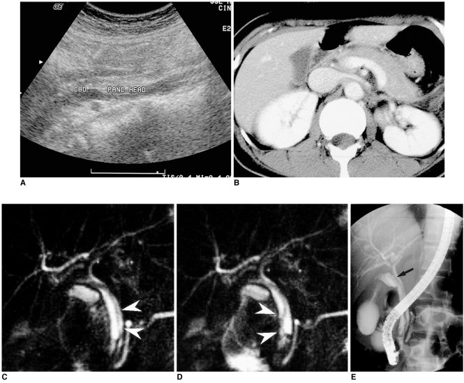
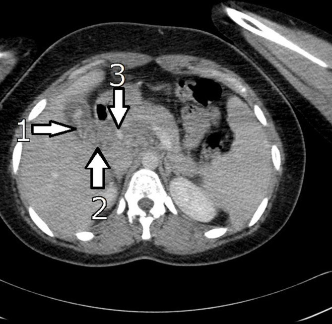
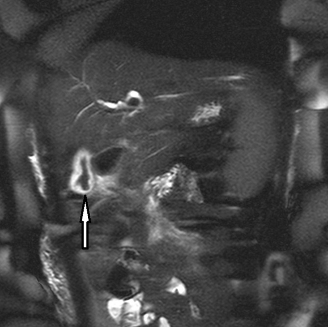

174 — Giun đũa đường mật (biliary ascariasis): dấu "bốn đường", ống mật giả tắc & khi nào can thiệp
Tags: pattern:khuyet-long vung:duong-mat anatomy:ong-mat-chu protocol:MRCP protocol:ERCP
Mức chắc chắn (certainty): tổng hợp y văn (literature synthesis) — bài tổng quan của Khuroo 2016 (WJG, PMC5011666) + hai ca nguyên văn có ảnh (Hwang 2001, PMC2718117; Keshvala 2019, PMC6945261) + tổng quan hệ thống ca bệnh (Cureus 2022, PMC9840414). Số liệu lấy trực tiếp từ các bài này; chỗ chưa kiểm chứng ghi rõ.
1. Tổng quan bệnh học – cơ chế hình ảnh
- Dịch tễ (số của Khuroo 2016): nhiễm Ascaris lumbricoides toàn cầu ~25% dân số, ước 1,4 tỉ người; mỗi năm 1,2–2 triệu ca bệnh lâm sàng và ~20.000 ca tử vong. Ở vùng dịch tễ (Kashmir), giun đũa đường mật–tụy (hepatobiliary and pancreatic ascariasis, HPA) là nguyên nhân của 36,7% ca bệnh đường mật, 23% viêm tụy cấp, 14,5% áp-xe gan và 12,5% sỏi đường mật.
- Hình thái quyết định hình ảnh: giun trưởng thành dài, trụ, phân biệt đực/cái — đực 15–30 cm × 2–4 mm, cái 20–40 cm × 3–6 mm (đường kính vừa khít lòng ống mật chủ); sống 6–18 tháng; từ trứng đến giun trưởng thành ~4 tháng. Khi chui vào ống mật chủ (common bile duct, CBD), con giun vừa kích thích làm ống giãn nhẹ, vừa vẫn cử động — hai yếu tố tạo nên hình ảnh đặc trưng.
- TẠI SAO siêu âm thấy "bốn đường" (four-line sign): vỏ kitin và thành cơ của giun phản âm mạnh → trên cắt dọc thấy 2 đường sáng mặt ngoài + 2 đường sáng mặt trong, kẹp giữa là lòng ống tiêu hóa chứa dịch, không phản âm. Giun không tạo bóng lưng (không cản âm như sỏi) vì cấu trúc mềm, và cử động khi quan sát thời gian thực — hai đặc điểm này là chốt phân biệt với sỏi.
- TẠI SAO MRCP thấy khuyết lòng: mật có T2 rất dài → sáng trên chuỗi T2 nặng (MRCP); giun là mô mềm, T2 ngắn hơn mật nhiều → khuyết lòng hình ống, trơn, dài nằm trong lòng ống sáng. Chụp lặp lại vài giây sau thấy khuyết lòng đổi vị trí = giun còn sống (Hwang 2001 ghi nhận đúng nghiệm pháp này).
- TẠI SAO CT yếu hơn: tỉ trọng giun gần với mật/mô mềm, đường kính chỉ vài mm và nằm chéo mặt cắt → dễ bỏ sót hoặc chỉ thấy "dải tăng tỉ trọng nhẹ trong ống giãn". CT có giá trị khi tìm biến chứng (áp-xe gan, viêm tụy, thủng) chứ không phải để phát hiện con giun.
- Cơ chế biến chứng: giun vào ống mật qua nhú Vater, chui ra–vào nhiều lần; cử động trong ống mật kéo dài ~10 ngày trên siêu âm theo dõi (Khuroo 2016). Khi giun chết trong ống, xác giun + trứng thành nhân sỏi bùn/sỏi sắc tố nâu → sỏi trong gan và viêm đường mật mủ tái phát (recurrent pyogenic cholangitis) — đây là di chứng muộn quan trọng nhất.
2. Mẫu hình + chẩn đoán phân biệt theo vị trí (gamut)
Mẫu hình chung: khuyết lòng dài, trơn, không cản quang, đổi vị trí/cử động, trong ống mật giãn nhẹ + bệnh cảnh đau hạ sườn phải – nôn – vàng da nhẹ, thường ở người từ vùng dịch tễ hoặc đã can thiệp đường mật.
- Trong ống mật chủ: giun đũa (chốt: cử động + không bóng lưng), sỏi ống mật chủ (bóng lưng, có thể đổi vị trí theo tư thế nhưng không tự cử động), cục máu đông (hemobilia) sau chấn thương/sinh thiết, khí trong đường mật sau cắt cơ Oddi (rất sáng, có artifact), stent nhựa (hình ống đôi, có tiền sử đặt), u nhầy nhú trong ống (IPNB) (khuyết lòng bám thành, không di động, ống giãn không tương xứng).
- Trong túi mật: giun đũa (dấu "mắt bò" — vòng sáng quanh con giun cuộn trong túi mật phù nề), sỏi/bùn mật, polyp cholesterol, máu cục.
- Trong ống tụy: giun đũa gây viêm tụy cấp (khuyết lòng dài trong ống tụy giãn, tụy phù nề) — bệnh cảnh nặng, có thể hoại tử.
- Ngoài lòng ống: áp-xe gan (giun chui vào nhu mô qua vết rách ống mật nhỏ) — khi thấy giun trong đường mật phải chủ động tìm áp-xe/viêm tụy, đừng dừng ở chẩn đoán "có giun".
Gamut theo bệnh cảnh lâm sàng (Khuroo 2016 chia 6 thể): đau quặn mật; viêm đường mật cấp; viêm túi mật không sỏi; áp-xe gan; viêm tụy cấp; và sỏi trong gan/viêm đường mật mủ tái phát (di chứng).
3. Bảng so sánh phân biệt (ma trận đối chiếu)
| Thực thể (entity) | Hình ảnh điển hình (US / MRCP / CT) | Chốt vào (rule-in) | Chốt loại (rule-out) | Gợi ý xác nhận |
|---|---|---|---|---|
| Giun đũa đường mật | US: dấu bốn đường, không bóng lưng, cử động; MRCP: khuyết lòng dài–trơn–hình ống, đổi vị trí giữa 2 lần chụp; CT: dải tăng tỉ trọng nhẹ trong ống giãn | Cử động thời gian thực hoặc đổi vị trí trên MRCP lặp lại | Không bóng lưng + không bám thành + ống giãn nhẹ đồng đều → loại sỏi/u | US thời gian thực 3–5 phút; MRCP lặp lại sau 5 giây; ERCP/duodenoscopy |
| Sỏi ống mật chủ | US: cung phản âm + bóng lưng; MRCP: khuyết lòng tròn/bầu dục, bờ rõ, thường ở đoạn thấp | Bóng lưng sau cung phản âm | Khuyết lòng dài, trơn, rời thành và di động → nghĩ giun | US + MRCP; EUS nếu sỏi nhỏ |
| Cục máu đông (hemobilia) | Khuyết lòng không đều, có thể dài; tiền sử chấn thương/sinh thiết/ERCP; mật có thể tăng tỉ trọng | Tiền sử can thiệp/chấn thương + khuyết lòng thay đổi nhanh trong vài ngày | Vỏ giun đều, hai thành song song, cử động → giun | CT có cản quang, theo dõi 48–72 giờ |
| Khí đường mật | Rất sáng trên CT, không thấy trên MRCP (khí không tín hiệu), có thể hình ống; sau cắt cơ Oddi | Tỉ trọng khí trên CT + tiền sử can thiệp | Không sáng trên MRCP → loại khí | CT cửa sổ khí |
| IPNB / u nhú trong ống | Khuyết lòng bám thành, không di động, ống mật giãn không tương xứng với kích thước u, có thể có nhầy | Bám thành + không cử động + giãn ống mạn | Khuyết lòng di động, trơn, rời thành → giun | MRCP + cholangioscopy + sinh thiết |
| Viêm đường mật mủ tái phát (di chứng) | Sỏi/bùn trong gan, hẹp ống, giãn không đều, có thể thấy xác giun canxi hóa | Sỏi sắc tố nâu trong gan + tiền sử giun | Không có sỏi/bùn, chỉ khuyết lòng di động → còn giun sống | CT + MRCP; ERCP lấy sỏi |
4. Protocol chụp + thuật toán xử trí
Chẩn đoán hình ảnh (thứ tự thực hành):
- Siêu âm bụng (đầu tay, bắt buộc): nhịn ăn 6–8 giờ; dùng đầu dò convex, khảo sát thời gian thực 3–5 phút dọc ống mật chủ và túi mật, ghi lại video nếu thấy cấu trúc nghi giun. Tìm dấu bốn đường, mất bóng lưng, cử động, giãn ống mật, túi mật phù nề, dịch quanh tụy. Khuroo 2016: siêu âm phát hiện giun trong ống mật 24/26 ca (92,3%); 20/20 ca có ≥ 2 giun nhưng chỉ 4/6 ca có 1 giun — một con giun dễ bị bỏ sót.
- MRCP (khi siêu âm âm hoặc cần bản đồ đường mật): chuỗi T2 3D nặng T2, không cần gadolinium; đọc khuyết lòng hình ống và so sánh 2 lần chụp cách nhau vài giây để chứng minh di động. MRCP thay ERCP khi không dự kiến can thiệp (Khuroo 2016).
- CT bụng có cản quang: không dùng để phát hiện giun; dùng khi nghi áp-xe gan, viêm tụy hoại tử, thủng đường mật hoặc phân biệt khí/sỏi.
- ERCP ± duodenoscopy: vừa chẩn đoán vừa điều trị; soi tá tràng thấy giun thò ra–vào nhú Vater; chụp đường mật thấy khuyết lòng dài, trơn, có thể hình vòng/loop.
- Xét nghiệm hỗ trợ: bạch cầu ái toan tăng; soi phân tìm trứng có giá trị thấp ở vùng dịch tễ (tỉ lệ nhiễm nền 30–90% — Khuroo 2016); trứng âm tính không loại trừ (có thể chỉ có giun đực).
Không có hệ phân độ RADS riêng — quyết định dựa trên thời gian giun lưu trong ống và biến chứng:
flowchart TD
A[Nghi giun đũa đường mật: đau HSP phải + nôn + vàng da nhẹ] --> B[Siêu âm thời gian thực]
B -->|Thấy giun cử động| C{Có biến chứng?}
B -->|Không thấy, nhưng nghi cao| D[MRCP lặp lại 2 lần]
D -->|Khuyết lòng di động| C
D -->|Không rõ| E[ERCP / duodenoscopy]
C -->|Không: viêm đường mật nhẹ, không áp-xe| F[Điều trị nội: nhịn ăn, dịch, giảm đau, chống co thắt, tẩy giun]
C -->|Có: viêm đường mật mủ, áp-xe, viêm tụy nặng| G[ERCP cấp + dẫn lưu mật qua mũi]
F --> H{Giun ra khỏi ống ≤ 3 tuần?}
H -->|Có| I[Theo dõi + tẩy giun định kỳ 6 tháng]
H -->|Không| J[ERCP lấy giun]
G --> J
J --> K[Kiểm tra sạch ống mật + điều trị biến chứng]
Điều trị (số liệu từ nguồn):
- Nội khoa trước: nhịn ăn, dịch tĩnh mạch, giảm đau/chống co thắt, kháng sinh nếu viêm đường mật. Điều trị bảo tồn giải quyết hoàn toàn triệu chứng 68–80% ca (Cureus 2022).
- Tẩy giun: albendazole 400 mg liều duy nhất, hoặc mebendazole 500 mg liều duy nhất, hoặc mebendazole 100 mg × 2/ngày × 3 ngày (Cureus 2022). Khuroo 2016 khuyến cáo không bơm thuốc tẩy giun trực tiếp vào ống mật vì làm giun chết tại chỗ, cản trở giun tự ra.
- ERCP can thiệp khi: triệu chứng không giảm và/hoặc giun không ra khỏi ống sau 3 tuần; giun đã chết trong ống; ca tái phát; viêm đường mật mủ cần ERCP + dẫn lưu mật qua mũi cấp cứu (Khuroo 2016; Cureus 2022).
- Lưu ý kỹ thuật: cắt cơ Oddi (sphincterotomy) tạo đường vào thuận lợi cho giun tái xâm nhập — nguồn Cureus 2022 khuyến cáo tránh cắt cơ rộng khi chỉ để lấy giun; đây là điểm cần cân nhắc theo từng ca, không phải chống chỉ định tuyệt đối.
- Phòng tái phát: tẩy giun định kỳ mỗi 6 tháng làm giảm tái phát (Cureus 2022); điều trị giun ở ruột cho cả gia đình/vùng dịch tễ; cải thiện vệ sinh.
Ca minh họa có số (Keshvala 2019): nữ 25 tuổi từ vùng dịch tễ, sốt + đau thượng vị; bilirubin 61 µmol/L, ALP 398 U/L, GGT 438 U/L, amylase 102 U/L; siêu âm: túi mật phù nề, OMC 6 mm (giãn nhẹ), không sỏi; CT: cấu trúc đường cong tăng tỉ trọng trong túi mật lan vào OMC; MRCP: khuyết lòng giảm tín hiệu trong lòng túi mật/OMC. Điều trị mebendazole 3 ngày, lâm sàng và xét nghiệm bình thường sau 4 tuần, không cần can thiệp.
5. Biến thể bình thường và cạm bẫy
- Giun trong túi mật ≠ giun trong ống mật: giun cuộn trong túi mật cho dấu "mắt bò" (vòng sáng quanh cấu trúc tối), không phải khuyết lòng dài; Khuroo phát hiện 13/13 ca giun trong túi mật bằng siêu âm, trong khi ERCP kém phát hiện vị trí này — đừng chỉ làm ERCP rồi kết luận âm.
- Bỏ sót giun đơn độc/ở bóng Vater: siêu âm chỉ thấy 4/6 ca một giun; giun nằm ở nhú hoặc tá tràng có thể không thấy trên siêu âm → nếu lâm sàng điển hình mà hình ảnh âm, làm duodenoscopy/ERCP hoặc MRCP lặp lại.
- Sỏi giả do bùn mật: bùn có thể phản âm và không bóng lưng như giun; khác ở chỗ không có cấu trúc hai thành song song và không cử động.
- Khí sau cắt cơ Oddi rất sáng trên CT nhưng không thấy trên MRCP; đừng chẩn đoán "giun" chỉ vì thấy cấu trúc sáng trong ống trên CT.
- Satisfaction of search: thấy giun rồi dừng → bỏ sót áp-xe gan, viêm tụy hoại tử, thủng ống mật; và bỏ sót sỏi sắc tố (di chứng) ở ca tái phát.
- Tiền sử can thiệp đường mật (cắt cơ Oddi, nối mật–ruột Roux-en-Y) làm giun dễ vào đường mật hơn — nguồn Cureus 2022; đây là yếu tố nguy cơ cần hỏi.
- Đừng nhầm với IPNB/u nhú: khuyết lòng bám thành, không di động, ống giãn mạn tính và có nhầy → cần cholangioscopy/sinh thiết, không điều trị tẩy giun.
6. Tự lượng giá — Blind Quiz ngay trên trang tĩnh
Ca 1 — Nữ 44 tuổi, đau hạ sườn phải tái diễn, không sốt. Xem 3 chuỗi ảnh: CT (A), MRCP (B), ERCP (C).

- Gợi ý: ống mật trong gan trái giãn; không thấy sỏi cản quang.
- Câu hỏi: (1) Mô tả khuyết lòng trên MRCP và ERCP. (2) Ba chẩn đoán phân biệt? (3) Dấu hiệu nào chốt giun đũa?
Bấm để hiện đáp án (findings + chẩn đoán)
- Findings: CT (A) giãn ống mật trong gan trái, có cấu trúc tăng tỉ trọng nhẹ trong lòng ống (mũi tên). MRCP (B) và ERCP (C) cho khuyết lòng dài, trơn, hình ống trong ống mật giãn — không bóng lưng, không bám thành. (D) là hình nội soi tá tràng thấy giun ở nhú.
- Chẩn đoán: giun đũa đường mật.
- Vì sao: cấu trúc dài–trơn–rời thành trong lòng ống mật, không cản quang, kèm giãn ống nhẹ; sỏi sẽ tròn + bóng lưng, u nhú sẽ bám thành.
- Phản biện: ca này không có ảnh siêu âm thời gian thực — nếu chỉ có MRCP tĩnh, không phân biệt được giun sống/chết; cần thêm siêu âm hoặc MRCP lặp lại.
- Nguồn ảnh: Hwang CM et al., Korean J Radiol 2001, PMC2718117 Fig. 1 — CC BY-NC 4.0 (giữ nguyên bản).
Ca 2 — Cùng bệnh nhân thứ hai: siêu âm (A), CT (B), hai lát MRCP cách nhau 5 giây (C, D), ERCP (E).

- Gợi ý: ống mật chủ giãn nhẹ, tụy hơi phù.
- Câu hỏi: (1) Trên MRCP C và D, khuyết lòng có gì thay đổi? (2) Thay đổi đó nói lên điều gì? (3) Nếu khuyết lòng không đổi vị trí thì nghĩ gì?
Bấm để hiện đáp án (findings + chẩn đoán)
- Findings: siêu âm (A) thấy cấu trúc ống trong OMC; CT (B) tụy phù nề nhẹ; MRCP (C) có khuyết lòng hình ống (đầu mũi tên) trong OMC; 5 giây sau (D) khuyết lòng đã đổi vị trí/hình dạng; ERCP (E) xác nhận và lấy giun.
- Chẩn đoán: giun đũa đường mật còn sống gây viêm tụy nhẹ.
- Vì sao: khuyết lòng di chuyển giữa hai lần chụp liên tiếp = vật thể tự do, mềm, còn sống; sỏi không tự đổi vị trí trong vài giây, u càng không.
- Nếu không đổi vị trí: nghĩ giun đã chết (xác giun thành nhân sỏi), sỏi/bùn, cục máu đông, hoặc u nhú — cần ERCP/cholangioscopy.
- Nguồn ảnh: Hwang CM et al., Korean J Radiol 2001, PMC2718117 Fig. 2 — CC BY-NC 4.0 (giữ nguyên bản).
Ca 3 — Nữ 25 tuổi, sốt và đau thượng vị sau chuyến đi; CT (A) và MRCP (B).

- Gợi ý: túi mật phù nề, không thấy sỏi; OMC 6 mm.
- Câu hỏi: (1) Cấu trúc bất thường nằm ở đâu? (2) Vì sao ban đầu chẩn đoán nhầm là viêm túi mật do sỏi? (3) Bước hình ảnh nào xác nhận?
Bấm để hiện đáp án (findings + chẩn đoán)
- Findings: CT: cấu trúc đường cong, tăng tỉ trọng trong lòng túi mật (1) lan vào OMC đoạn gần (2), đầu tụy phù nề (3). MRCP: khuyết lòng giảm tín hiệu trong túi mật/OMC.

- Chẩn đoán: giun đũa đường mật + viêm tụy nhẹ; điều trị mebendazole 3 ngày, hồi phục hoàn toàn sau 4 tuần.
- Vì sao nhầm: giun trong túi mật gây viêm túi mật không sỏi (đau, sốt, thành túi mật dày) — hình ảnh giống viêm túi mật thông thường; chỉ khi nhìn kỹ lòng túi mật mới thấy cấu trúc đường cong.
- Nguồn ảnh: Keshvala C et al., BJR Case Rep 2019, PMC6945261 Fig. 2–3 — CC BY 4.0.
Bài liên quan chéo
- 100 – Tổng quan hệ Bụng
- 128 – Ký sinh trùng đường mật (sán lá gan nhỏ)
- 139 – Sán lá gan & nang sán
- 131 – Tắc mật: sỏi, u, hẹp lành tính
- 138 – Sỏi trong gan & viêm đường mật mủ tái phát
- 135 – Viêm tụy cấp (Atlanta)
- 102 – Viêm túi mật & viêm tụy sau ERCP
- 179 – Hoại tử ống mật sau can thiệp u gan
Không dùng để chẩn đoán độc lập khi chưa có người hướng dẫn.